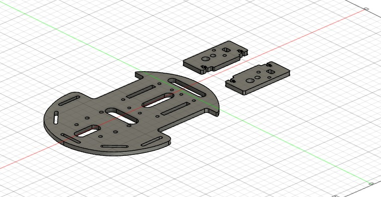

Projeto sobre um carrinho Arduino
O que é um carrinho Arduino
O Carrinho Arduino é um veículo compacto e inteligente, equipado com um microcontrolador Arduino. Ele pode ser programado para realizar diversas funções, como seguir linhas, desviar de obstáculos, e até mesmo ser controlado remotamente por meio de Bluetooth.
